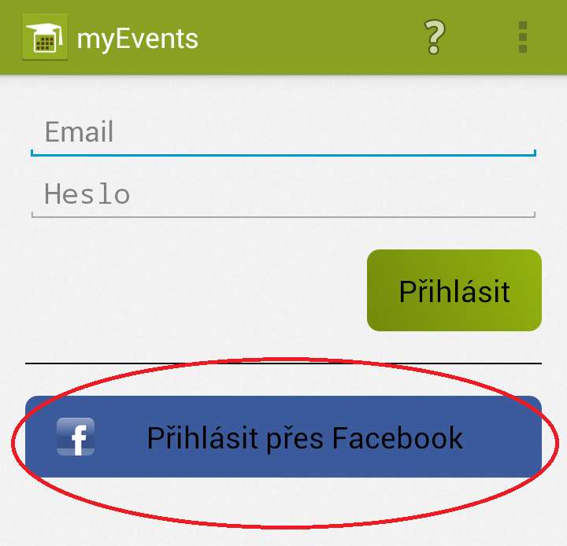
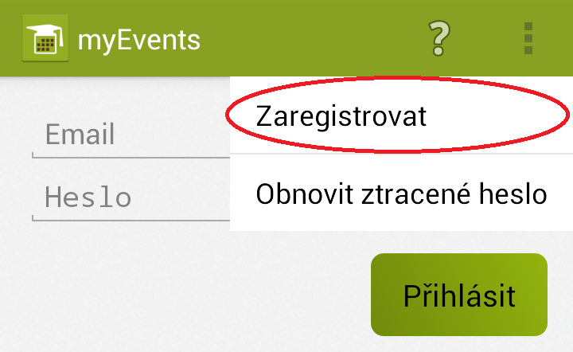
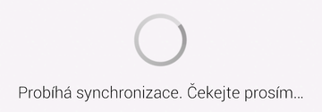

Aby bylo možné aplikaci používat, je nutné se do ní nejprve přihlásit. Existují dva způsoby přihlášení, oba vyžadují aktivní připojení k internetu.
 Pokud máte na svém mobilním zařízení nastavený facebookový účet, stačí, když jednoduše klepnete na tlačítko Použít FB, které najdete na přihlašovací obrazovce. Jediné, co pak musíte udělat, je potvrdit žádost aplikace o práva k přístupu k facebookovému účtu. Tato žádost nicméně nemusí být nutně zobrazena.
Druhým způsobem je přihlášení pomocí účtu myEvents. Ten si můžete vytvořit na webové stránce aplikace nebo pomocí registrační obrazovky.
 Na registrační obrazovku se dostanete pomocí tlačítka Zaregistrovat v menu. Je třeba vyplnit několik základních údajů a registraci odeslat. V případě, že použijete jiný email, než máte ve svém zařízení nastavený jako hlavní (je uveden ve formuláři jako výchozí), je potřeba dodatečně tuto emailovou adresu ověřit. Instrukce k ověření Vám budou odeslány na zadanou emailovou adresu po odeslání formuláře.
 V případě úspěšného přihlášení je potřeba, aby si aplikace stáhla potřebná data - provedla synchronizaci. Na provádění první sychnronizace budete po přihlášení upozorněni a po jejím ukončení je aplikace připravena k používání. Nicméně pokud nechcete čekat, můžete bez obav používat své mobilní zařízení běžným způsobem zatímco je synchrozniace prováděna.